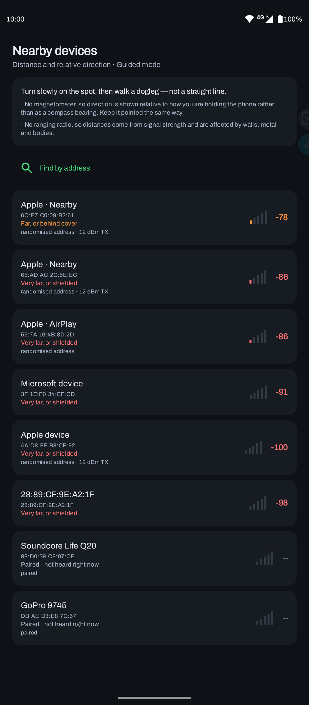
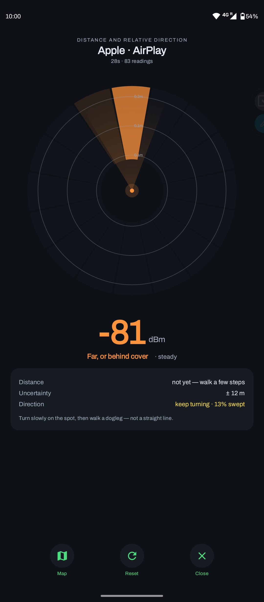
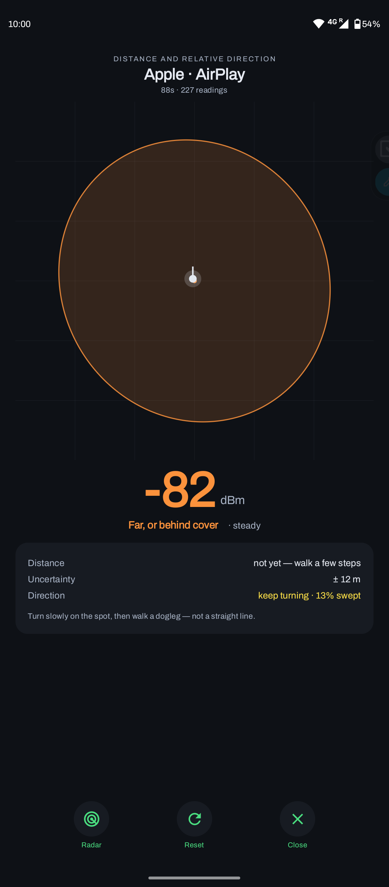
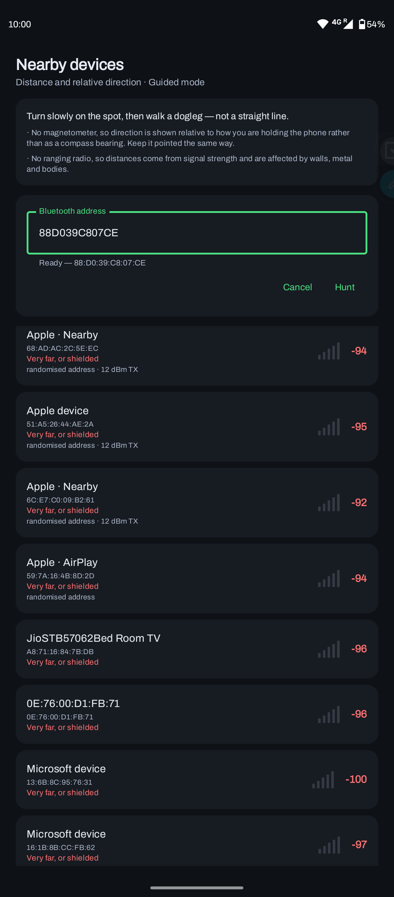
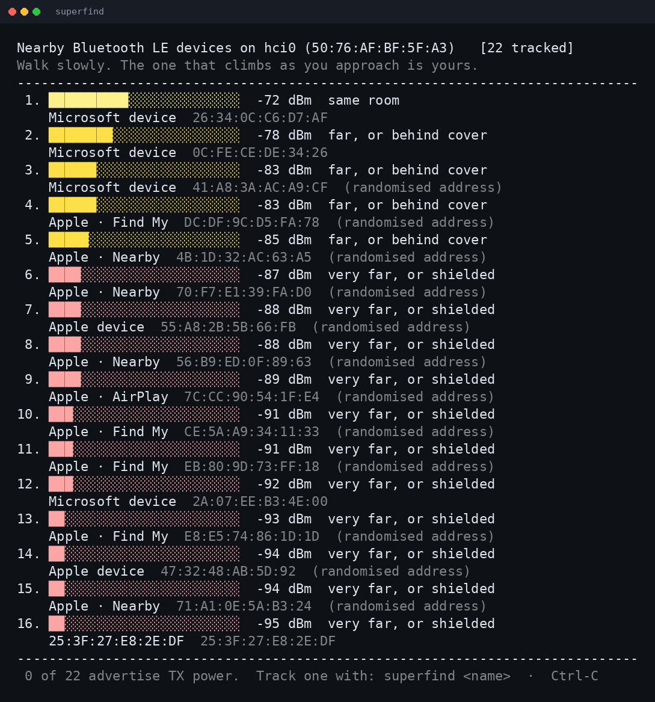
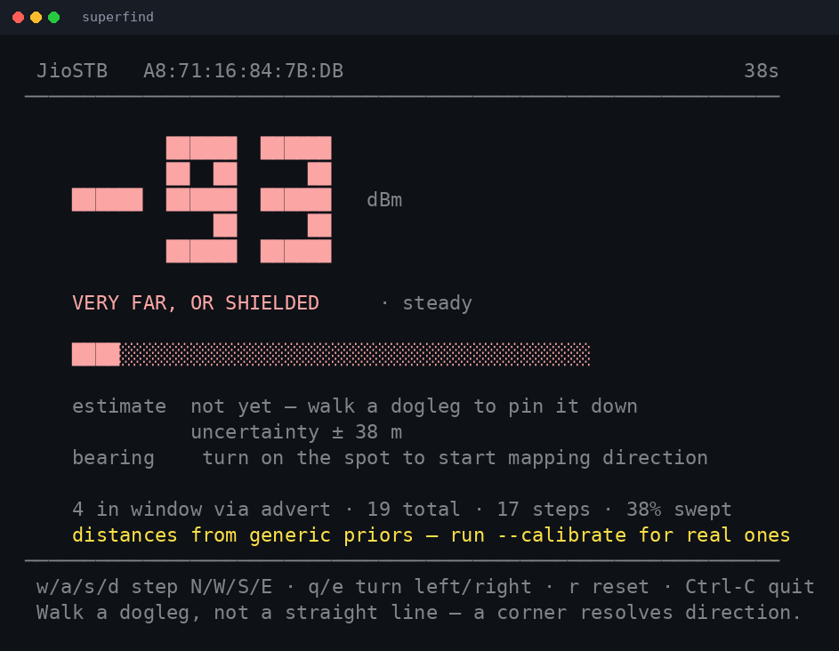

SuperFind
Find a device by its radio. Locate Bluetooth things in real space, with honest uncertainty instead of false precision.
What it does
SuperFind helps you physically locate a Bluetooth device, a tag, an earbud, a speaker, using nothing but its radio signal. Signal strength is a coarse proxy for distance, so instead of pretending to know exactly where something is, SuperFind runs a particle-filter fusion engine that tracks the target across noisy, often ring-shaped evidence and shows you a confidence region rather than a fake pinpoint. The same Rust core powers a Linux command-line tool and an Android app.
SuperFind had a warm reception from the developer community on X, where the demo reached a wide audience and picked up a lot of encouragement.
Key features
Device discovery
Lists nearby BLE devices by their broadcast names instead of rotating hex MAC addresses.
Hunt mode
Target one device and get a live signal readout and distance estimate as you move toward it.
Radar view
A swept aperture that remembers the sectors you have already scanned to guide your search.
Honest map
Draws a 95% confidence ellipse rather than a single point, so the uncertainty is visible, not hidden.
Calibration
Per-device path-loss fitting at 1, 2, 4 and 8 metres, with physical-plausibility checks on the fit.
One core, many platforms
An identical fusion core runs the CLI and the Android app, with more platforms planned.
Screenshots
Android app




Command line (Linux)


How it works
Radio samples flow through a platform-agnostic core that keeps full uncertainty at every step, so the UI can render honest confidence rather than a single guess.
A particle filter is used instead of a Kalman filter because the likelihood from a single distance reading is ring-shaped and often bimodal, which a Gaussian cannot represent. Motion comes from pedestrian dead reckoning (typed on the CLI, sensed on Android), and the bearing estimator returns "unknown" rather than a low-confidence guess. Confidence is the product of coverage, concentration and significance, multiplied rather than averaged, so any one of them being near zero sinks the answer.
Built with
Download
Current release: v0.1.0. Verify against checksums.txt from the release if you like.
Android app
Compose UI with radar and confidence-ellipse map. Verified on a Moto G40 Fusion, Android 6 to 16.
Download APKLinux CLI
Terminal survey and hunt modes over BlueZ. No root needed, just a running bluetoothd.
Download CLIEarly release. The APK is debug-signed, so on install Android may warn about an unknown source; that is expected. On Linux, make the binary executable (chmod +x) and run it with Bluetooth powered on.
Discussion
Tried it, or curious how the fusion works? Leave a comment.